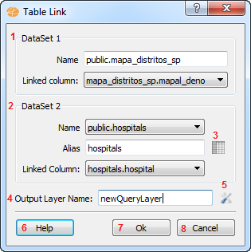

Table
Link Dialog
This interface is
used to create a new query layer that joins the information contained
by two datasets..
Note that in order for two datasets to be linked they both need to be
on
the same datasource. If you want information on how to import a tabular
file, check this link, and if you
want information on how to export a layer to another datasource, check
this link, or
for an advanced exporter, check this link.
This
dialog is
accessed through:
Clicking
on a dataset Layer with the right mouse button > Link...

- Base dataset section - Displays:
- The name of the base dataset;
- A combobox that displays the columns of that dataset
which is used to select wich column will be used on the linking
operation.
- Linking dataset section - Displays:
- A combobox that contains
the datasets that are from the same datasource of the base dataset;
- A section to type the value of the alias;
- A combobox that displays the columns of that dataset which is
used to select wich column will be used on the linking operation.
- Data preview button - Displays
a table that shows the first 5 rows of data contained by the currrently
selected linking dataset.
- Output Layer Name
- Used to allow the user to type the title of the new query layer.
- Advanced options button - Displays a new dialog used to select
which fields will be used and the join type.
- Help
- Displays the help.
- Ok
- It creates a new layer containing the sql generated by this dialog.
- Cancel
- It closes
the dialog without generating a new layer.